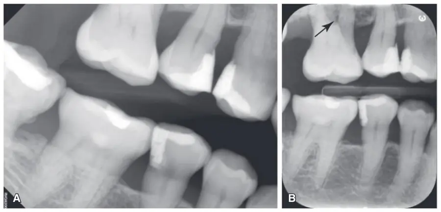
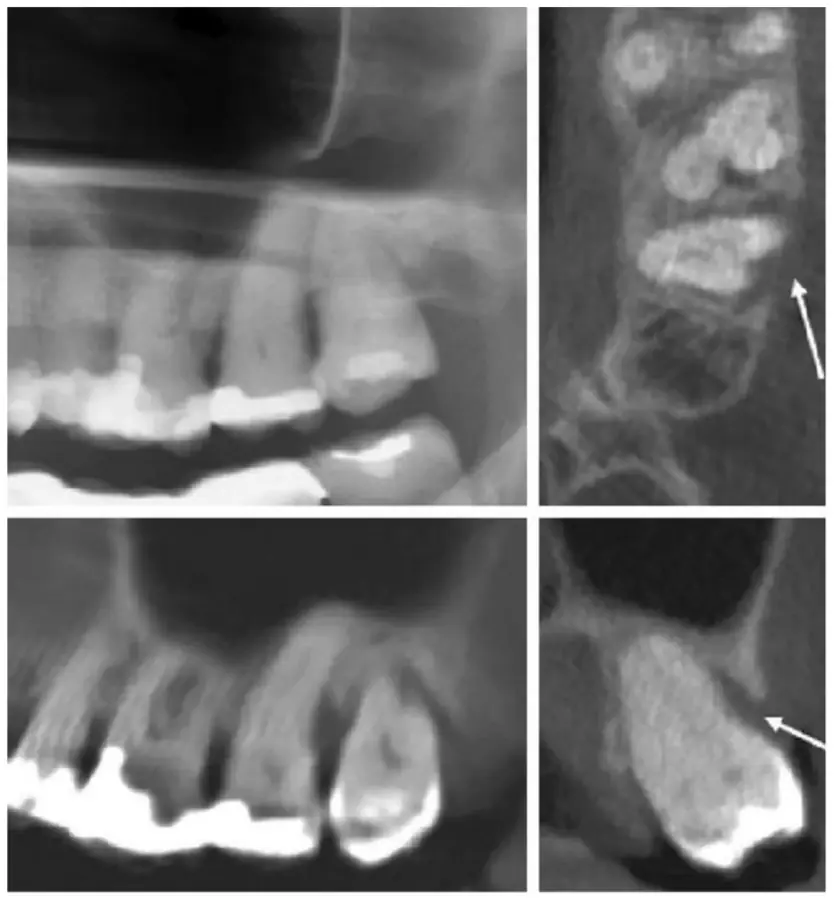

نسخه استخراجشده؛ ترجمه یا تأیید علمی انجام نشده است. وضعیت: captured
بیماری با تحلیل استخوان پیشرفته مراجعه کرده. بایتوینگ افقی میگیری و کرست آلوئولار اصلاً در کادر نیست. این یک خطای تکنیکی نیست؛ یک تصمیم اشتباه پیش از گرفتن کلیشه است.

حکم روشن است: «برای بیماران با شواهد بالینی از دست رفتن اتصال پریودنتال، بایتوینگ استاندارد (یعنی افقی) به دلیل وسعت تحلیل استخوان، بعید است کرست آلوئولار را نشان دهد.» و این «بهویژه در سنسورهای جامد (مستقیم) نگرانکننده است، چون این سنسورها به دلیل بدنهی ضخیم بیرونیشان سطح فعال کمتری دارند».
راهحل، پیش از اکسپوز: «دندانپزشک باید پیش از گرفتن تصویر تصمیم بگیرد که گیرنده را ۹۰ درجه بچرخاند تا بایتوینگ عمودی ساخته شود.» روش عمودی «همان اندازهی گیرنده را به کار میبرد، ولی طوری جهتدهی شده که محور بلند گیرنده عمودی باشد».
و نکتهی ظریفش: «هرچند هندسهی تصویر نسبت به روش افقی تغییری نمیکند، این چرخش ارتفاع گیرندهی افزوده فراهم میکند و به دندانپزشک اجازه میدهد کرست زائدهی آلوئولار را در صورت وجود از دست رفتن چشمگیر اتصال ببیند.»
چرا اصلاً بایتوینگ و نه پریاپیکال؟ «بایتوینگ باید انتخاب اولیهی تصویربرداری برای توصیف بیماری پریودنتال در نظر گرفته شود. این تصاویر فاصلهی میان CEJ و کرست زائدهی آلوئولار بینریشهای را دقیقترین نشان میدهند، چون پرتو تابشی عمود بر محور طولی دندانها جهتگیری شده است.»
و پریاپیکال چه سودی دارد؟ «مزیت نشان دادن طول کامل دندان را دارد، که ارزیابی درصد ریشهی درگیرِ تحلیل استخوان را ممکن میکند.» ولی «اغلب نمای معوجی از رابطهی CEJ و کرست آلوئولار میدهد، به دلیل تغییرات بیشتر در زاویهی عمودی پرتو».
و این معوج شدن، بیشتر در کدام فک؟ «شایعترین حالت در ماگزیلا است، به دلیل محدودیتهای آناتومیک که ارتفاع طاق کام بر جایگذاری گیرنده تحمیل میکند. در چنین شرایطی، سطح کرست آلوئولار باکال ممکن است نزدیک یا کرونالتر از CEJ پالاتال پروجکت شود و ارتفاع استخوان را بیشتر از واقع نشان دهد.»
و ترتیب کار: «معاینهی بالینی باید همیشه اول انجام شود و پایهای برای توجیه آزمونهای افزوده — از جمله گرفتن تصاویر تشخیصی — باشد.» تجویز تصویربرداری «وقتی اندیکاسیون دارد که معاینهی بالینی به پریودنتیت اشاره کند» و باید «اطلاعات افزودهای بدهد که از معاینهی بالینی به دست نمیآید».
تصویر داخلدهانی چهار محدودیت دارد — هر چهار را بشناس، چون هر کدام یک خطای بالینی میسازد:

حکم دربارهی پانورامیک: «با توجه به شواهد موجود، پانورامیک نباید بهعنوان ابزار تصویربرداری اولیه برای توصیف بیماری پریودنتال تجویز شود. تفسیر پانورامیک برای ملاحظات پریودنتال تنها زمانی باید در نظر گرفته شود که تصویر از قبل گرفته شده باشد، و احتمال کمی وجود داشته باشد که تصویربرداری داخلدهانی افزوده یافتههای بالینی مهمی نشان دهد.»
و ایرادهایش: «سوپرایمپوزیشنها و اعوجاجهای متعدد (بهویژه در نواحی قدامی فکها)»، «وضوح فضایی پایینتر نسبت به تصاویر داخلدهانی که جزئیات را محدود و تشخیص را دشوارتر و کماعتمادتر میکند»، و «گرفتن آن از نظر فنی میتواند چالشبرانگیز باشد و خطاهای وضعیتدهی بیمار بر مصالحههای این تکنیک بیفزاید».
و بایتوینگ خارجدهانی؟ «در حال حاضر هیچ شواهدی از نقشی برای تصاویر بایتوینگ خارجدهانی در توصیف تحلیل استخوان پریودنتال پشتیبانی نمیکند.»
CBCT: یک مزیت قدرتمند و یک حکم محتاطانه. مزیتش «توانایی دیدن ساختارهای استخوانی نگهدارندهی دندانها از هر زاویه، بدون سوپرایمپوزیشن آناتومیک» است. میتواند «ارزیابی کاملتری از معماری نقایص عمودی پیچیده، نقایص کریتر، فورکیشن، و از دست رفتن صفحهی کورتیکال باکال و لینگوال» بدهد، و ویژگیهایی مثل مورفولوژی ریشه، فنستراسیون کورتیکال و ضایعهی التهابی پریاپیکال همراه را بهتر نشان دهد.
ولی: «تصویربرداری CBCT میتواند با آرتیفکتهای ناشی از ترمیمهای فلزی محدود شود، که جزئیات معماری استخوانی موردبررسی را بهشدت مخدوش میکنند.» و حکم نهایی: «شواهد کنونی از استفاده از CBCT برای تصویربرداری پریودنشیوم پشتیبانی نمیکند، چون مزیت چشمگیری بر روشهای داخلدهانی ندارد — بهویژه وقتی هزینه، زمان و دوز پرتوی افزوده در نظر گرفته شود.» استثنا: «CBCT، بهویژه سیستمهای حجم کوچک و وضوح بالا، ممکن است در هدایت مدیریت ضایعات استخوانی منتخب اندیکاسیون داشته باشد، بهویژه وقتی جراحی در نظر است.»
نوع سؤال: ساخت کلمه · 4 خانه
حروف منبع: س · پ · ی · و